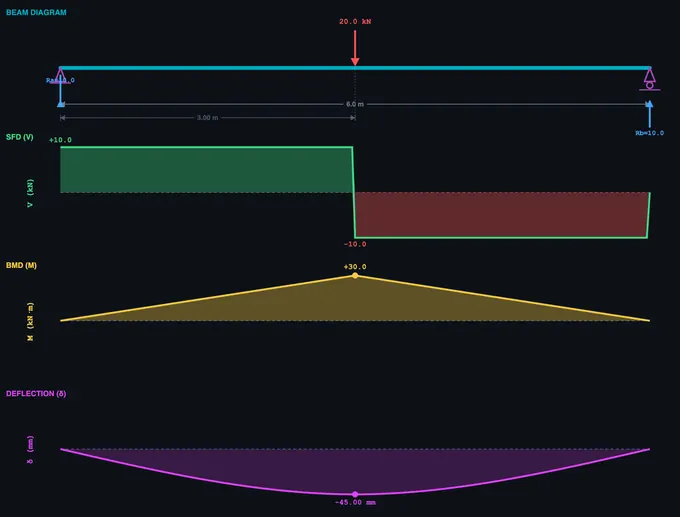
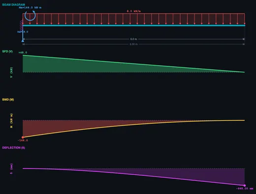

Beam Bending Simulator — SFD, BMD & Deflection
Shear Force & Bending Moment Diagrams • Deflection Curve • Point Loads • UDL • Moments — Drag & Drop
1 Overview
The Beam Bending Simulator is a fully interactive structural analysis tool for beams. It generates real-time Shear Force Diagrams (SFD), Bending Moment Diagrams (BMD), and Deflection Curves (δ) for simply supported, cantilever, and overhanging beams. Apply point loads, uniformly distributed loads (UDL), and pure moment (couple) loads — all with drag-and-drop direct manipulation on the canvas.
The simulator features an undo/redo system (Ctrl+Z), right-click context menus, inline +/− magnitude buttons, draggable support positions (overhanging mode), engineering dimension lines, and toggleable diagram visibility. All calculations follow standard equilibrium equations: ΣF = 0 and ΣM = 0.
2 Setting Up the Load Case
The simulator opens in Simulate mode with a simply supported beam and a default 10 kN point load. The canvas displays four stacked diagrams: beam diagram, SFD, BMD, and deflection curve. Below the canvas you will find the action bar (undo, redo, delete, dimensions toggle), diagram toggles (SFD, BMD, δ), a beam length slider, property panel, load list, presets, and readout cards.
To get started quickly, click one of the Presets — Central Point Load, Quarter Load, Full UDL, or Combined Loading. Or simply select a tool (↓ Point, ≡ UDL, or ↻ Moment) and click anywhere on the beam to place a load. Click an existing load to select it, then drag to reposition or use the inline +/− buttons to adjust magnitude.
3 Building the Diagrams
Beam Type: Choose Simply Supported, Cantilever, or Overhanging. In overhanging mode, you can drag the support triangles horizontally on the canvas or use the Support A/B sliders to control overhang lengths.
Placing loads: Select a tool from the toolbar (↓ Point, ≡ UDL, ↻ Moment) and click anywhere on the beam. The load appears instantly with real-time SFD, BMD, and deflection updates. Add multiple loads to create complex scenarios.
Editing loads: Click any load to select it (cyan glow). Drag point loads horizontally to reposition. Drag UDL edge handles to resize, or drag the UDL body to move it. Use the +/− buttons that appear above the selected load for quick magnitude adjustments (hold to repeat). The property panel below shows sliders for precise control. Right-click any load for a context menu with Duplicate and Delete options.
Moment loads: Pure couple loads (kN·m) are drawn as curved arrows. They produce no shear force but create a step change in the BMD. Moments support negative values (clockwise/anticlockwise).
Keyboard shortcuts: Ctrl+Z undo, Ctrl+Shift+Z redo, Delete/Backspace to remove selected load.
Diagram toggles: Use the SFD, BMD, and δ buttons to show or hide each diagram. The canvas auto-resizes — hidden diagrams don’t leave blank space. The 📏 button toggles engineering dimension lines showing distances from the beam origin.
The readout cards update in real time: Reaction A, Reaction B, Max Shear, Max BM, Load Sum, Beam Length, Max Deflection, and Moment at A.
4 Reading the Theory
Explore mode provides structured educational content organised into three categories: Beam Basics, Forces & Moments, and Diagrams. Select a category tab, then click any concept card from the grid to view a detailed explanation with a worked example on the canvas.
Topics include types of supports, types of loads, free body diagrams, equilibrium equations, the relationship between shear force and bending moment (dM/dx = V), points of contraflexure, and the shapes of SFD and BMD for standard loading cases. Each concept is illustrated with an animated diagram so you can see the theory come alive visually.
5 Try a Problem
Practice mode generates random beam problems. You are given a beam configuration with loads and asked to calculate a specific value (e.g., reaction force, maximum bending moment). Type your answer in the input field and click Check. The simulator provides instant feedback and tracks your running score. If you get stuck, the step-by-step solution is revealed after an incorrect attempt.
Quiz mode presents 5 randomised questions per session, mixing multiple-choice and numeric answers. Your final score is displayed at the end with a detailed review of each question. Quiz questions cover beam reactions, SFD/BMD values, deflection formulas, and conceptual understanding of beam bending theory.
6 Design Notes
- Drag to explore: Drag a point load along the beam and watch all four diagrams (SFD, BMD, deflection) update in real time — the best way to build intuition.
- The bending moment is maximum where the shear force crosses zero. Watch the SFD to predict BMD peaks.
- For cantilever beams, maximum bending moment and shear always occur at the fixed support.
- Use the Combined Loading preset to study how point loads and UDL interact on the same beam.
- Add a moment load at midspan to see the step discontinuity in the BMD — a key concept for structural analysis.
- In overhanging mode, drag the supports inward to increase overhang and observe how negative (hogging) moments develop.
- Toggle off SFD and BMD to focus only on the deflection curve, or show all four diagrams for the complete picture.
- Use Ctrl+Z freely — the undo stack has 40 levels, so you can experiment without fear of losing your setup.
- Right-click → Duplicate a load to quickly create symmetric loading patterns.
Beam Bending Simulator — Shear Force, Bending Moment & Deflection Diagrams

Beam bending analysis determines the internal shear forces, bending moments, and deflections along a beam. The bending stress formula is σ = My/I, where M is the bending moment, y is the distance from the neutral axis, and I is the second moment of area. This free interactive simulator generates real-time SFD, BMD, and deflection curves for beams with point loads, UDL, and moment loads — all with drag-and-drop direct manipulation.
Beam bending analysis is a fundamental topic in structural mechanics and strength of materials. Engineers use Shear Force Diagrams (SFD) and Bending Moment Diagrams (BMD) to visualise how internal forces vary along a beam under various loading conditions. Understanding these diagrams is essential for designing safe structures, selecting appropriate beam cross-sections, and preventing structural failure.
A beam is a structural element that resists loads primarily through bending. The most common beam types are simply supported beams (resting on two supports), cantilever beams (fixed at one end, free at the other), and overhanging beams (extending beyond one or both supports). Each type responds differently to applied loads, producing unique SFD and BMD shapes that engineers must understand to predict structural behaviour.
How Shear Force and Bending Moment Diagrams Work
The shear force at any section of a beam equals the algebraic sum of all vertical forces to one side of that section. For a simply supported beam with a central point load P, the reactions are each P/2. The SFD shows a constant positive shear from the left support to the load, then a step change to negative shear from the load to the right support. The bending moment at any section equals the sum of moments about that section from all forces on one side. The BMD for this case is triangular, with maximum moment M = PL/4 at the centre. Under a uniformly distributed load (UDL), the SFD is linear and the BMD is parabolic, with maximum moment M = wL²/8.
Key Relationships Between SFD and BMD
There is a fundamental mathematical relationship: dM/dx = V (the slope of the BMD equals the shear force) and dV/dx = −w (the slope of the SFD equals the negative of the distributed load intensity). This means that where the shear force is zero, the bending moment reaches a maximum or minimum. A point of contraflexure occurs where the bending moment changes sign — the beam transitions from sagging (concave up) to hogging (concave down). These relationships allow engineers to quickly sketch diagrams and verify calculations.
How to Use This Beam Bending Simulator
Select a beam type (Simply Supported, Cantilever, or Overhanging), choose a load tool (↓ Point, ≡ UDL, or ↻ Moment), and click anywhere on the beam to place a load. Drag loads to reposition them, use the inline +/− buttons for quick magnitude adjustments, or right-click for duplicate and delete options. The canvas displays four real-time diagrams: beam diagram, SFD, BMD, and deflection curve — each toggleable via the SFD/BMD/δ buttons. In overhanging mode, drag the support triangles to adjust overhang lengths. Use Ctrl+Z to undo any action (40 levels). Switch to Explore mode for 12 structural concepts with worked examples, Practice for random beam problems, and Quiz for scored assessments.

How Do Moment Loads Affect a Beam?
A pure moment (couple) load applies a rotational force at a point on the beam without any vertical force component. Unlike point loads or UDL, a moment load produces no change in shear force — the SFD remains unaffected. However, it creates a step discontinuity in the BMD: the bending moment diagram jumps by the magnitude of the applied moment at the load point. Moment loads are common in real structures at rigid connections, eccentric brackets, and beam-to-column joints. This simulator lets you apply positive (clockwise) or negative (anticlockwise) moments from −30 to +30 kN·m.
How Is Beam Deflection Calculated?
The deflection curve (elastic curve) shows how a beam deforms under loading. This simulator computes deflection using numerical double integration of M(x)/EI — the bending moment distribution is integrated twice to obtain the slope and then the deflection at every point. Boundary conditions (zero deflection at supports for SS/overhanging, zero deflection and slope at the fixed end for cantilever) are applied to determine the constants of integration. The assumed flexural rigidity is EI = 2×10&sup6; N·m² (typical steel I-beam: E = 200 GPa, I = 1×10−&sup5; m&sup4;).
Worked Example — Simply Supported Beam, 4 m Span, UDL 5 kN/m
A simply supported beam of span L = 4 m carries a uniformly distributed load (UDL) of w = 5 kN/m over its entire length. Find the reactions, maximum shear, maximum bending moment, maximum bending stress in a 200 mm-deep I-beam (Z = 145×103 mm³), and midspan deflection.
| Quantity | Formula | Working | Result |
|---|---|---|---|
| Total load on beam | W = w·L | 5 × 4 | 20 kN |
| Each support reaction (symmetry) | RA = RB = W/2 | 20/2 | 10 kN |
| Maximum shear (at supports) | Vmax = R | — | 10 kN |
| Maximum bending moment (midspan) | Mmax = wL²/8 | 5 × 16 / 8 | 10 kN·m |
| Maximum bending stress | σmax = Mmax/Z | 10×106/145×103 | 69.0 MPa |
| Midspan deflection (EI = 2×106 N·m²) | δ = 5wL4/(384·EI) | 5 × 5000 × 256 / (384 × 2×106) | 8.3 mm |
Three checks fall out of this: (i) the bending stress is well below the yield strength of typical structural steel (250 MPa) — the design is stress-safe; (ii) the deflection ratio δ/L = 8.3/4000 = 1/482 — safely under the architectural limit of L/360 for floor beams; (iii) the SFD is linear from +10 kN at A to −10 kN at B, the BMD is parabolic with its peak at midspan. The simulator’s live diagrams should match these numbers within rounding.
Euler–Bernoulli vs Timoshenko — When the Classical Theory Breaks Down
The deflection formula above is from Euler–Bernoulli beam theory, which assumes plane sections remain plane and perpendicular to the neutral axis after bending — i.e. shear deformation is neglected. This is excellent for slender beams (length-to-depth ratio L/h > 10) and is the default for almost all undergraduate work.
Timoshenko beam theory adds shear deformation. For a stocky beam where L/h < 10, the Euler–Bernoulli deflection under-predicts reality:
- L/h = 20 — Euler–Bernoulli error < 1%, classical theory is fine.
- L/h = 10 — Euler–Bernoulli underestimates by ~3%.
- L/h = 5 — Underestimates by ~10%, switch to Timoshenko.
- L/h = 2 — Underestimates by 40%+. Treat as a deep beam or use 2D plane-stress FEA.
This is why short structural elements like corbels, brackets, and pier caps are designed using strut-and-tie models or FE analysis, not beam formulas.
Stress vs Deflection — Which One Controls the Design?
Many students assume the “design” means keeping stress under yield. For practical architectural beams that is rarely the binding constraint — deflection limits usually govern, often by a wide margin.
| Application | Deflection limit | Why this limit |
|---|---|---|
| Roof beam (no ceiling below) | L/180 | Visual sag and ponding prevention |
| Floor beam (plaster ceiling below) | L/360 | Plaster cracks above this strain |
| Floor beam supporting brittle finishes / cladding | L/480 | Tile and brick crack at very low strain |
| Machine-tool bed | L/3000 or tighter | Maintains workpiece tolerance |
| Cantilever balcony | L/180 (tip) | Tip deflection visible at human scale |
For the 4 m beam in the worked example: at σ = yield/factor-of-safety = 250/1.67 = 150 MPa, the section would still be working at well under its capacity (69 MPa < 150 MPa, FoS ≈ 2.2). But the L/360 deflection limit translates to 11.1 mm; we used 8.3 mm. Push the load up by 35% and the deflection limit is breached before the stress limit. Stiffness, not strength, drives architectural beam sizing.
The Four Classical Support Conditions — And Their Effective Length
The boundary conditions at the supports change Mmax and δmax dramatically for the same load. Use the simulator to verify each:
| Support type | Reactions | Mmax for UDL w | δmax for UDL w |
|---|---|---|---|
| Simply supported (pin-roller) | RA, RB vertical only | wL²/8 | 5wL4/384EI |
| Cantilever (fixed-free) | 1 force + 1 moment at the wall | wL²/2 (at wall) | wL4/8EI (at tip) |
| Propped cantilever (fixed-roller) | 1 force + moment at fixed end, 1 force at roller | wL²/8 | wL4/185EI |
| Fixed-fixed (encastre) | 2 forces + 2 moments | wL²/12 (at wall) | wL4/384EI |
Fixed-fixed beams are 5 times stiffer than simply supported beams under UDL — same span, same load, same section. This is why monolithic concrete construction (which gives fixed end conditions for free) can use thinner slabs than steel construction (which typically uses pinned connections).
Selected References
- Hibbeler, R. C. — Mechanics of Materials, 10th ed., Chapter 6 (Bending) and Chapter 12 (Deflection of Beams).
- Timoshenko, S. P. & Gere, J. M. — Mechanics of Materials, the historical reference for beam theory including the shear-deformation extension.
- AISC Steel Construction Manual, 15th ed. — standard section tables (Z, I, Sx) and deflection limit tables used in US practice.
- Eurocode 3 (EN 1993-1-1) Annex A and Eurocode 2 (EN 1992-1-1) — European steel and concrete design codes with explicit deflection limits.
- IS 800:2007 — General Construction in Steel — Code of Practice, Indian Standard widely cited in technical-education syllabi.
Beam Bending Formulas
| Property | Formula | Units |
|---|---|---|
| Bending stress | σ = M × y / I | MPa |
| Section modulus | Z = I / ymax | mm³ |
| Maximum deflection (simply supported, centre load) | δ = PL³ / 48EI | mm |
| Maximum deflection (cantilever, end load) | δ = PL³ / 3EI | mm |
| Maximum deflection (SS, full UDL) | δ = 5wL&sup4; / 384EI | mm |
| Shear stress (rectangular) | τ = 3V / 2A | MPa |
| Moment load BMD effect | ΔM = Mapplied (step change) | kN·m |
Where M is the bending moment, y is the distance from the neutral axis, I is the second moment of area, P is the point load, L is the span length, E is Young’s modulus, and V is the shear force.
Common Beam Support Conditions
| Support Type | Reactions | Degrees of Freedom |
|---|---|---|
| Simply supported | Vertical reaction at each end | Rotation allowed at supports |
| Cantilever | Vertical reaction + moment at fixed end | Free end can deflect and rotate |
| Fixed-fixed | Vertical reaction + moment at both ends | No rotation at supports |
| Overhanging | Vertical reaction at each support | Rotation allowed, extension beyond support |
What Is the Neutral Axis?
The neutral axis is an imaginary line along the cross-section of a beam where bending stress is zero — the material is neither in tension nor compression. For symmetric sections (rectangular, circular, I-beam about the strong axis), the neutral axis passes through the centroid. Above the neutral axis a sagging beam is in compression; below it, in tension. The farther a fibre is from the neutral axis, the higher its bending stress (σ = My/I).
What Is the Point of Contraflexure?
The point of contraflexure (or inflection point) is the location along a beam where the bending moment changes sign — from sagging (positive) to hogging (negative), or vice versa. At this point, the bending moment is zero. It typically occurs in overhanging beams and continuous beams. Engineers must identify this point because it affects reinforcement placement in concrete beams and weld locations in steel structures.
Why Are I-Beams Efficient for Bending?
I-beams concentrate material in the flanges (top and bottom), which are farthest from the neutral axis where bending stress is highest. The thin web connects the flanges and carries shear force. This shape maximises the second moment of area (I) relative to the material used, making I-beams 3–5× more efficient than solid rectangular sections of equal weight. This is why steel I-beams are the standard structural element in buildings and bridges.
What Is the Difference Between Bending Stress and Shear Stress?
Bending stress (σ = Mc/I) acts along the length of the beam, with maximum values at the top and bottom fibres and zero at the neutral axis. Shear stress (τ = VQ/Ib) acts across the cross-section, with maximum value at the neutral axis and zero at the top and bottom surfaces. For long slender beams, bending stress usually governs design; for short deep beams, shear stress becomes critical.
What Is Section Modulus?
The section modulus (Z) equals I/ymax, where I is the second moment of area and ymax is the distance from the neutral axis to the extreme fibre. It simplifies the bending stress formula to σ = M/Z. A higher section modulus means the beam can resist a larger bending moment. Engineers use section modulus tables to quickly select standard beam sizes for a given loading condition.
Explore Related Simulators
If you found this Beam Bending simulator helpful, explore our Thin-Walled Pressure Vessel simulator, Truss Analysis simulator, Mohr’s Circle simulator, and Shaft Torsion simulator for more hands-on practice.